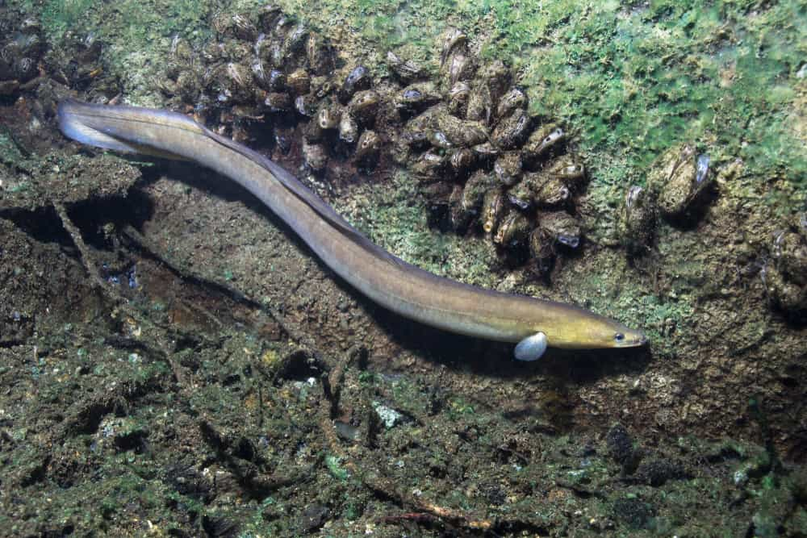

Ecology
Predation Regulation
Freshwater eels help regulate populations of their prey species, contributing to the balance of aquatic communities. By controlling the abundance of certain organisms, they can indirectly influence the structure and dynamics of ecosystems.
Nutrient Cycling
As predators, eels consume other organisms and release nutrients back into the environment through their waste. This process contributes to nutrient cycling within freshwater ecosystems, providing a valuable source of nutrients for other organisms and enhancing overall ecosystem productivity.
Habitat Engineering
Eels have the ability to burrow into mud or vegetation, creating tunnels and disturbances in the substrate. These burrowing activities can have positive effects by oxygenating sediments, improving water circulation, and creating microhabitats for other organisms.
Biodiversity Support
The presence of freshwater eels in ecosystems contributes to overall biodiversity. By occupying different niches and interacting with various organisms, they enhance species diversity and ecosystem resilience.
Species Interactions
Freshwater eels are part of intricate food webs and ecological interactions. Their predation on certain species can indirectly benefit other organisms in the ecosystem, preventing the dominance of particular species and promoting species diversity.
Ecological Research
The study of freshwater eels and their ecology provides valuable insights into the functioning of freshwater ecosystems. Research on these eels contributes to our understanding of food webs, trophic dynamics, and the overall ecology of aquatic systems.
Cultural Significance
Freshwater eels have cultural significance in many communities, especially in the Philippines where they are consumed as a delicacy and hold traditional value. This cultural connection can lead to increased awareness and appreciation for aquatic ecosystems, fostering conservation efforts